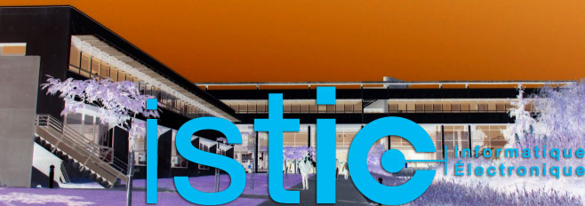

Welcome
Welcome to ISTIC, University Rennes 1 Education and Research department in Computer Science and Electrical Engineering.
The University of Rennes 1 – with 23 000 students – is an internationally acknowledged university, located in Rennes, in the West of France. Rennes is one of France’s liveliest and student-friendliest cities and a high-tech R&D center of global renown, at the convergence point of media, telecommunications and IT. The University of Rennes 1 hosts world-class research Labs in ICT and is tightly integrated within the industrial, innovation and entrepreneurial ecosystem in ICT.’
